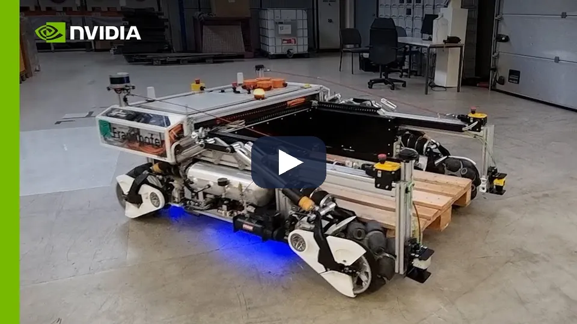
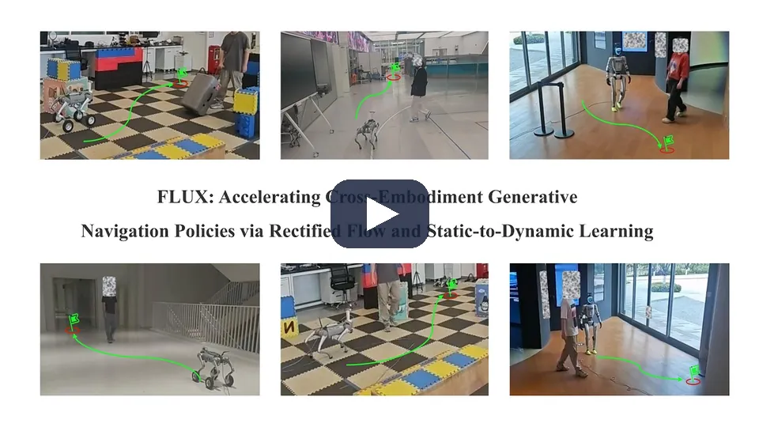
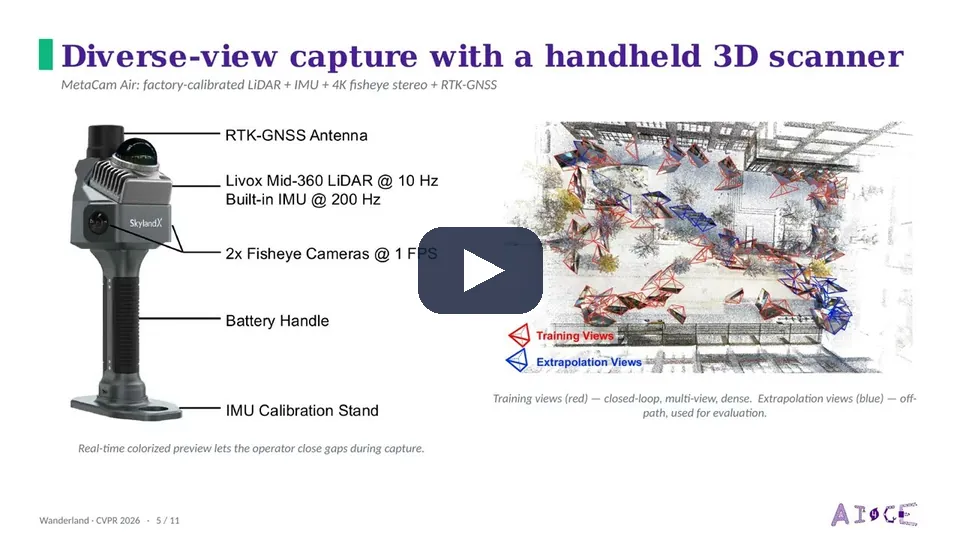
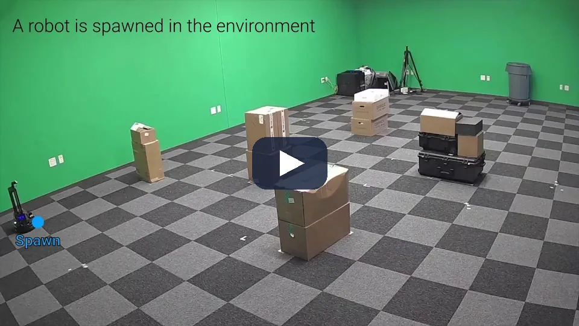
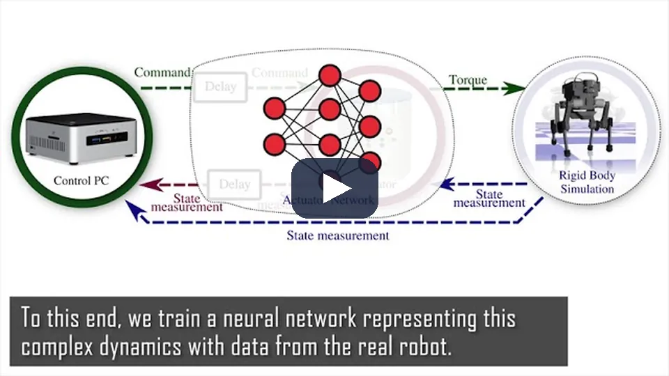

TRAVPLAN · 챕터 발표 · 시뮬레이션 (§S)
시뮬레이션은
네 층이다
운동학 시뮬, Isaac Sim, 보도 장면, 실물과의 짝 평가 —
무엇을 믿고, 무엇부터 고칠까
§S 시뮬레이션
엔진·리그
보도 장면·보행자
sim-to-real
지형·바퀴
최근 연구 16편
목차 · 결론 먼저
지금 가장 값싼 개선은 운동학 시뮬의 빈틈을 메우는 일이다
Isaac Sim을 유지한다
엔진 속도와 재현성은 우리 작업으로 직접 잰다.
평가 틀을 빌린다
SidewalkBench의 세 층. 보행자는 반응과 재현성 사이에서 고른다.
허점이 숫자를 부풀린다
L0의 가림이 그랬다. 예측력(SRCC)을 먼저 설계한다.
바퀴 접촉은 아직 못 믿는다
운동학 모델에 모듈 한계와 지연을 넣고 보정한다.
무게 중심이 평가로 옮겨 갔다
"더 빠른 엔진"에서 "믿을 수 있는 평가"로.
L0 → L1 → L2 → L3
싸고 효과가 큰 순서로 간다. TP 번호로 정리했다.
travplan: 질문은 하나다 — 시뮬의 12/12가 실물에서 무엇을 뜻하는가.
S.0 · 네 층
travplan에 필요한 시뮬레이션은 하나가 아니라 네 층이다
| 층 | 무엇으로 | 무엇을 검증하나 | 비용 |
|---|---|---|---|
| L0 | 운동학 시뮬 sim/kinematic_sim.py | Planner 학습 데이터, 스택 폐루프 비교 | 에피소드당 수 초, CPU |
| L1 | Isaac Sim 6.x + ROS 2 Jazzy (P1) | LiDAR → elevation map → TravMap → 스택 | 실시간, GPU 1장 |
| L2 | 보도 전용 장면·벤치마크 (URBAN-SIM, UrbanVerse, SidewalkBench) | 장면 다양성, 보행자 상호작용, 장거리 주행 | GPU 12 GB 이상 |
| L3 | 실물과 시뮬의 짝 평가 | 시뮬 순위가 실물 순위를 맞히는가 (SRCC) | 실물 로봇 필요 |
L0 운동학
벤치마크가 매일 돈다
→
L1 Isaac
TP-0005 사용자 실행 대기
→
L2 보도 장면
TP-0041 조사·PoC
→
L3 실물
TP-0043 SRCC 프로토콜
주의: 여기의 L0–L3는 시뮬 층이다. 벤치마크의 인식 단계 --perception l0·l1(합성 LiDAR → elevation_mapping_cupy)과는 다른 축이다.
travplan: 지금 도는 것은 L0다. L1 Isaac 폐루프(TP-0005)는 사용자 실행 대기다.
S.0 · 오늘의 L0
오늘의 L0는 운동학 시뮬이고, 지형은 Isaac과 한 곳에서 정의한다
- 벤치마크 시나리오 4개(연석·램프, 요철·포트홀, 경사·횡경사, 혼합), 0.05 m 높이장
- 지형은
sim/terrain.py한 곳.sim/isaac/terrain_export.py가 OBJ·NPZ·USD로 내보낸다 - 선택 항목: 가림(TP-0031), 합성 LiDAR 인식(TP-0053), 스워브 plant, 보행자, 지연·드리프트(TP-0032)
- Playground: 같은 시뮬을 JS로 옮겨 브라우저에서 돌린다

travplan: 수 초짜리 에피소드로 Planner를 학습하고 스택을 비교한다. 대신 빈틈이 있다(S.6.5).
1 · 엔진과 리그 (S.1, S.9)
엔진은 Isaac Sim을 유지한다
보도 시뮬레이터가 모두 그 위에 있다. 다른 엔진은 목적이 생길 때 쓴다.
엔진 속도와 재현성은 남의 숫자가 아니라 우리 작업으로 직접 잰다.
S.1 · 물리 엔진
보도 생태계가 Isaac Sim 위에 있어 엔진을 바꿀 이유가 없다
| 엔진 | 강점 | GPU 병렬 학습 | ROS 2 | travplan 역할 |
|---|---|---|---|---|
| Isaac Sim 6.x + Isaac Lab | PhysX·Newton, RTX LiDAR, 3DGS | ○ 수천 환경 | ○ 브릿지 | L1 주 엔진 |
| Newton | MuJoCo Warp, MPM 변형 지면 | ○ | ✕ | 변형 지면이 필요할 때 |
| MuJoCo · Playground | 정확한 접촉 | ○ | ✕ | 쓰지 않음 |
| Genesis | 자체 엔진 (속도 논란) | ○ | ✕ | 쓰지 않음 |
| Gazebo Harmonic · Jetty | ROS 표준, CPU | ✕ | ○ 표준 | GPU 없는 통합 시험 |
| Chrono | SCM·DEM·SPH 지형 | 일부 | 일부 | 변형 지면이 필요할 때 |
| CARLA | UE5 차량 | ✕ | ○ | 쓰지 않음 |
Isaac Lab 3.0(Early Access)은 백엔드를 설정 한 줄로 고른다: newton_mjwarp·ovphysx(kit-less), isaacsim_physx(ROS 2·RTX 센서).
travplan: P1(TP-0005)은 ROS 2 브릿지가 필요해 Isaac Sim 6.0을 쓴다. 학습 루프는 Isaac Lab 3.0의 kit-less 경로로 옮긴다.
[1] Isaac Lab, NVIDIA — arXiv:2511.04831
S.1.1 · Isaac Sim · 영상
Isaac Sim은 USD 장면 위에서 PhysX 물리와 RTX 센서를 한 번에 돌린다

물리, RTX 센서, ROS 연동이 한 장면에서 돈다. P1(TP-0005)의 RTX LiDAR → elevation mapping → TravMap 경로가 이 위에 놓인다.
제품 소개 영상이다. 속도와 재현성은 다음 장 GPUSimBench처럼 같은 장비에서 직접 잰 값으로 본다.
travplan: 보도 시뮬레이터 넷이 모두 이 위에 있다. 엔진을 바꿀 이유보다 재현성을 잴 이유가 먼저다.
[1] Isaac Lab, NVIDIA — arXiv:2511.04831 · Isaac Sim (NVIDIA)
S.1.4 · GPUSimBench [2]
빠르고 재현되는 엔진이 실물에 가깝다는 보장은 없다
| 엔진 | Franka 처리량 | 실물 EMD | 병렬 / 재실행 변동 |
|---|---|---|---|
| Genesis | 1.11×10⁷ FPS | 4.78 cm | 0 / 0 |
| MuJoCo Warp | 3.54×10⁶ FPS | — | 있음 / 있음 |
| Isaac Lab | 1.85×10⁶ FPS | 5.40 cm | 있음 / 0 |
| ManiSkill | — | 2.52 cm | 있음 / 0 |
travplan 1층 게이트는 재현성 위에 서 있다
같은 설정이면 12 에피소드가 전부 같다(TP-0156). Isaac Lab은 병렬 환경끼리 달랐다. 병렬 환경을 "반복"으로 세면 잡음이 섞인다.
RTX 5070 한 장. 실물 일치는 경사 충돌 실험 16회와의 EMD다. Genesis는 실물 일치 다섯째였다. 조작 장면만 쟀고 바퀴 접촉은 없다.

travplan: Isaac 폐루프(TP-0005)는 게이트를 쓰기 전에 같은 설정 재실행으로 잡음 바닥부터 잰다.
[2] GPUSimBench, Shanghai AI Lab 외, IROS 2026 — arXiv:2607.13059
S.9 · 지금 띄울 수 있는 ROS 2 리그
다섯 기준을 모두 만족하는 리그는 없어서 질문마다 고른다
3D 점군
보도급 지형
스워브 구동
손에 있는 장비
지형 내보내기
| 답해야 할 질문 | 맞는 리그 | 포기하는 것 |
|---|---|---|
| ROS 2 파이프라인이 도는가 (브릿지, TF, 주기) | CMU 탐사 개발 환경 | 지형을 못 바꾼다 |
| 우리 지형에서 2.5D가 이기는가 | Isaac Sim + terrain_export (TP-0005) | Ubuntu 24.04 + Jazzy 장비 |
| 스워브 기구학이 실물과 맞는가 | antbot_gazebo (대상 로봇) | 3D 센서를 직접 붙여야 한다 |
| 3D 점군 스택과 비교해 이기는가 | dddmr 내비 스택 + 아무 리그 | 지형이 보도가 아니다 |
대상 로봇 그 자체(4륜 스워브)지만 2D LiDAR 두 대와 IMU뿐이다. URDF의 lidar_3d_link에 gpu_lidar를 더하면 점군이 나온다.
점군(5 Hz)과 /terrain_map이 바로 나온다. 비용이 평탄도 하나라 0.07 m 턱과 0.24 m 턱을 가르지 못한다.
travplan: Gazebo 계열 리그를 쓰려면 PRD의 "Gazebo 주력 안 함" 결정의 예외로 둘지 먼저 정한다.
S.9.2 · CMU 탐사 개발 환경 · 영상
CMU 탐사 개발 환경은 환경 다섯 개와 점군·지형 비용 토픽을 바로 낸다

환경 다섯 개(캠퍼스 340×340 m, 차고 5층, 숲, 터널망, 실내 복도)와 RViz에 그려지는 등록 점군(5 Hz), 지형 costmap.
TravMapBuilder와 elevation_mapping_cupy를 실제 ROS 2 토픽 위에 붙여 보는 점군 공급원. 지형 비용은 평탄도 하나라 비교 기준선이 된다.
travplan: 지형은 못 바꾸지만, ROS 2 파이프라인이 도는지는 오늘 띄워 확인할 수 있다.
CMU Autonomous Exploration Development Environment — 저장소 autonomous_exploration_development_environment
2 · 보도 장면과 보행자 (S.2, S.3)
평가 틀은 보도 벤치마크에서 빌린다
보도 전용 시뮬레이터는 한 계보다. 보행자 모델은
반응하는 다양성과 재현되는 공정성 사이에서 고른다.
S.2 · 보도·도시 시뮬레이터
보도 전용 시뮬레이터는 사실상 UCLA VAIL 한 계보다
MetaDrive
2021, 자동차
→
MetaUrban
ICLR 2025, 보도 절차 생성
→
URBAN-SIM
CVPR 2025, Isaac Sim, GPU 병렬
→
UrbanVerse
ICLR 2026, 영상 → 장면
→
SidewalkBench
CoRL 2026, 평가

travplan: 네 구역은 배치 규칙의 틀이다. 연석·램프는 전면·통행 경계에, 화분·볼라드는 시설 구역에 둔다.
[3] MetaUrban, ICLR 2025 — arXiv:2407.08725 · [4] URBAN-SIM, CVPR 2025 — arXiv:2505.00690 · [5] UrbanVerse, ICLR 2026 — arXiv:2510.15018 · [6] SidewalkBench, CoRL 2026 — arXiv:2606.16953
S.2.1 · MetaUrban [3] · 영상
MetaUrban은 보도의 네 구역에 물체를 놓고 사람 1,100명과 로봇으로 채운다

도로 블록 5종을 이은 지도, 네 구역에 놓인 물체, SMPL-X 사람 1,100명과 배달로봇(COCO, Starship)·휠체어·로봇 개가 한 보도를 쓴다.
ORCA와 Push and Rotate로 서로와 물체를 피한다. 반응형 보행자의 가장 싼 형태다.
travplan: 보행자가 서로와 장애물을 피하기만 해도 벽을 뚫는 장면이 사라진다. ORCA 반응형(TP-0036)은 아직 보행자와 로봇만 피한다.
[3] MetaUrban, ICLR 2025 — arXiv:2407.08725
S.2.2 · URBAN-SIM [4]
URBAN-SIM은 GPU 한 장에서 보도 환경 256개를 병렬로 돌린다
- WFC 지형: 평지·계단·경사·요철 타일 단위로 잇는다
- JAX ORCA: 보행자가 학습 중인 로봇에 실시간 반응한다
- 비동기 장면 샘플링: 환경 256개, RGB-D를 켜고 1,800–2,600 fps
- URBAN-BENCH: 보행 4과제, 내비 3과제, km 단위 장거리
- 권장 VRAM 12 GB 이상: 데스크톱 RTX 5080(16 GB)은 되고, 랩탑(8 GB)은 못 미친다

travplan: L2 학습 장면의 첫 후보다. 에셋은 따로 받으므로 라이선스부터 확인한다(TP-0041).
S.2.3 · UrbanVerse [5]
장면 배치가 현실 분포를 따를 때 학습이 일반화된다
- 도시 여행 영상 → 장면 그래프 → "디지털 사촌" 에셋 → Isaac Sim
- 24개국 영상에서 160장면, 에셋 10만 개 이상
- 배치 수를 늘리면 멱법칙으로 오른다. 템플릿 절차 생성은 거의 안 오른다
- PPO 정책: 시뮬 +6.3 %, zero-shot 실물 +30.1 % (논문 표기)
- Coco·Go2 실물 최대 89.7 %, 337 m 공공 도로에서 개입 두 번
- 바퀴형은 차동 구동 운동학 + PD로 시뮬레이션했다

travplan: 손으로 만든 시나리오 4개는 이 곡선의 맨 왼쪽에 있다. Planner D의 일반화를 재려면 현실에서 온 배치가 필요하다.
S.2.5 · SidewalkBench [6]
SidewalkBench는 평가를 단위 시험·보행자·장거리 세 층으로 나눈다
| 층 | 시나리오 | 지표 |
|---|---|---|
| 단위 시험 | 330 | 경로 완주율 |
| 보행자 반응 (사건 8종) | 800 | 성공률 |
| 장거리 (100 m 이상) | 105 | 100 m당 실패 |
- 보행자 횡단이 가장 어렵다: 평균 성공 0.01, 충돌 0.68
- 최고 모델도 장거리에서 100 m당 1.34번 실패
- 절차 생성 장면 성능이 실제 스캔 장면 성능과 강하게 상관

travplan: TP-0027 평가 틀로 빌렸고, 100 m당 실패 지표는 TP-0038로 들어갔다(failure_rate 스크립트).
S.2.6 · S.2.7 · 평가 지표
성공률이 같은 스택은 비용과 제약 순위로 가른다
내비를 손익으로 채점한다
- 보행자 상해(충돌 순간 Δv), 기물 파손, jerk로 상한 음식 환불
- 기준선 7개 모두 적자. SLA를 지킨 방법 중 CANVAS −28.40달러/회가 최소 손해, Nav2 −37.34달러
- travplan:
collision_speed_mps,cargo_jerk_cost추가(TP-0038)
0.10 m 턱은 hard, 잔디는 페널티
- 동적 장벽 안내로 성공 44.3 → 56.0/60, 턱 실패 12.0 → 2.0개/실행
- 대가: 주행 거리 27.2 → 36.9 m (약 36 %)
- travplan: Planner D 선택기는 치명 페널티 1,000으로 이미 사전식이다. 남은 것은 샘플 안내

travplan: guidance+mppi와 planner_d+mppi처럼 둘 다 12/12인 스택을 가를 때 쓴다.
[7] CostNav, 서울대·MAUM.AI·KAIST — arXiv:2511.20216 · [8] Jia, How, "사전식 선호로 생성 정책 조종", MIT 2026 — arXiv:2609.15014
S.3 · 보행자 모델
보행자 모델은 힘·속도·사건·언어·데이터의 다섯 갈래다
| 갈래 | 대표 | 반응 | 비용 | 쓰는 곳 |
|---|---|---|---|---|
| 규칙: 힘 모델 | Social Force [9] | 로봇·서로·벽에 반응 | CPU, 매우 쌈 | HuNavSim [10], Arena |
| 규칙: 속도 최적화 | ORCA [11] | 충돌 없는 속도 보장 | CPU·GPU(JAX), 쌈 | MetaUrban, URBAN-SIM |
| 사건 스크립트 | 상태 기계 | 조건이 맞으면 정해진 행동 | 쌈, 재현성 최고 | SidewalkBench, DynBench [12] |
| 언어로 만든 행동 트리 | LLM + SFM | 트리대로, 국소는 SFM | 생성 때 LLM | GROVE [13] |
| 데이터 기반 생성 | 궤적 diffusion | 학습된 분포대로 | GPU, 비쌈 | NavIsaacLab [14] |
반응하지 않는 보행자로는 로봇이 멈춰 버리는 문제(freezing)나 보행자가 비켜 주는 상호작용을 잴 수 없다.
평가에는 사건 기반이 공정하다
같은 사건이 같은 조건에서 일어나 스택끼리 공정하다. 목록 밖 상호작용은 못 만든다.
학습된 보행자는 학습에 값지다
NavIsaacLab은 시뮬로만 학습한 정책을 Scout Mini에 올렸다. 비싸서 L2로 미룬다.
travplan: 기본 보행자는 등속 직선이다. ORCA 반응형은 선택 항목(TP-0036)으로 들어갔다.
[9] Helbing, Molnár 1995 · [10] HuNavSim, RA-L — arXiv:2305.01303 · [11] van den Berg 외, ISRR 2011 · [12] FLUX/DynBench — arXiv:2603.12806 · [13] GROVE, IROS 2026 — arXiv:2606.25504 · [14] NavIsaacLab — arXiv:2606.26265
S.3.4 · NavIsaacLab [14]
데이터 기반 보행자는 미리 학습한 생성 모델을 병렬 시뮬에 얹는다

보행자 궤적은 자기 과거 궤적, 이웃 궤적, occupancy 지도를 조건으로 받는 diffusion 모델이 만들고, 적대적 동작 모방 제어기가 물리 기반 전신 동작으로 옮긴다. 시뮬로만 학습한 내비 정책을 Scout Mini에 그대로 올렸다.
비싸다. 학습된 보행자는 Planner를 학습시킬 때 값지고, 평가에는 사건 기반이 공정하다. L0는 ORCA·Social Force 반응형을 먼저 쓰고, 데이터 기반은 L2(Isaac)로 미룬다.
[14] NavIsaacLab, SUSTech·NUS·Peng Cheng Lab — arXiv:2606.26265
S.3.2 · ORCA와 DynBench
ORCA 보행자는 서로 협조한다고 가정해 로봇을 과하게 비켜 줄 수 있다
SHARE는 효과가 약한 파라미터다. 3 s 뒤 옆 이동이 SHARE 0.25·0.5·1.0에서 0.50·0.49·0.49 m로 같다. 비키는 시점은 horizon τ가 정한다(τ 0.5 → 4 s에서 2 s 뒤 0.02 → 0.37 m).
ORCA 대신 상태 기계 + NavMesh
- 상태 셋(GoTo·Idle·LookAround), 경유점 사이는 NavMesh A*
- 보행자 1.1 m/s, 로봇 0.5 m/s
- FLUX: SocialNav 성공 59.3 → 64.0, 충돌 21 → 16 (NavDP 대비)
- 서 있다가 갑자기 걷는 보행자는 등속으로도 ORCA로도 못 만든다
travplan: TP-0167 짝 비교에서 충돌이 줄면 Controller 덕인지 ORCA 보행자가 피해 준 덕인지 함께 적는다.
S.3.2 · DynBench [12] · 영상
DynBench 위에서 배운 FLUX 정책은 바퀴·사족·휴머노이드 실물에 zero-shot으로 올라갔다

학습 환경 DynBench의 보행자는 상태 기계(GoTo·Idle·LookAround)와 NavMesh A*로 움직인다. 서 있다가 갑자기 걷는 보행자는 등속으로도 ORCA로도 못 만든다.
SocialNav 성공 59.3 → 64.0, 충돌 21 → 16 (NavDP 대비). 세 로봇에 zero-shot.
travplan: ORCA 짝 비교(TP-0167) 뒤의 시도 순서 3번이 이 "멈춰 서기·둘러보기" 보행자다.
[12] FLUX/DynBench, HKUST·HKUST(GZ)·NUS — arXiv:2603.12806
travplan 결과 · TP-0154 · 0161 · 0165
보행자 5명이면 충돌은 720 중 8건이고, 등급화 페널티가 4건으로 줄인다

| Controller (720 에피소드) | 도달 | 충돌 | 치명 | 짝 비교 (기준만 : 옵션만) |
|---|---|---|---|---|
mppi_plant_lag (기준) | 568 | 8 | 10 | — |
mppi_plant_lag_pg (등급화 페널티) | 571 | 4 | 10 | 0 : 3, p = 0.25 |
mppi_plant_yaw (몸 먼저 돌리기) | 573 | 9 | 8 | 24 : 29, p = 0.58 |
3 · 센서·렌더링과 sim-to-real (S.4, S.6)
시뮬의 허점은 학습 정책이 가장 먼저 찾아낸다
관측을 현실에 맞추고, 장면 기하를 실측으로 만들고,
시뮬 순위가 실물 순위를 맞히는지 잰다.
S.4.1 · S.6.5 · 가림 (TP-0031 · 0047)
L0의 가림 허점 하나가 벤치마크를 낙관적으로 만들고 있었다

- L0는 5 m 원 안을 가림 없이 본다(높이 잡음 σ = 0.01 m뿐)
- 가림을 켜자 guidance+mppi 40 → 36/40, planner_d+mppi 39 → 38/40
- 실패는 모두 포트홀 둘레: 센서 0.3 m면 앞쪽 턱이 바닥을 가린다
- 그림자 상한 + 깊이 prior(TP-0044·0047)로 40/40
travplan: 2.5D 시선 검사가 가장 값싼 충실도 개선이었다. 실제 LiDAR 경로는 Isaac RTX LiDAR(TP-0005)에서 검증한다.
S.4.2 · 3DGS real-to-sim
보이는 것은 3DGS가, 부딪히는 것은 메시가 맡는다
영상 → 3DGS + 충돌 메시. Vid2Sim의 메시만 렌더링한 기준선은 실물 과제를 하나도 풀지 못했다. GaussGym은 RTX 4090 한 장에서 4,096개 환경을 돌린다.
LiDAR·RTK·어안 스캔 530곳. 영상만으로 잡은 궤적 자세는 축척을 맞춘 뒤에도 0.30 m, 5.0° 어긋났다. Vid2Sim 장면 fine-tuning은 CityWalker 성공률을 21 % 떨어뜨렸다.

travplan: 서비스 지역 스캔은 LiDAR 융합으로 하고, 메시를 terrain.py 높이장으로 바꿔 L0와 L1이 같은 실측 지형을 쓴다.
[16] Vid2Sim, CVPR 2025 — arXiv:2501.06693 · [17] GaussGym — arXiv:2510.15352 · [18] Wanderland, CVPR 2026 — arXiv:2511.20620
S.4.2 · Wanderland [18] · 영상
Wanderland는 LiDAR·RTK·어안을 묶은 손 스캐너로 기하가 정확한 장면을 만든다

스캐너는 LiDAR, IMU, RTK-GNSS, 4K 어안 카메라 두 대다. 융합 SLAM이 미터 단위 점군과 자세를 내고, 3DGS는 그 점군에서 시작한다.
SLAM이 상용 소프트웨어라 같은 처리를 재현하려면 공개 LiDAR SLAM으로 바꿔야 한다. 장면은 정적이라 보행자와 차량이 없다.
travplan: 서비스 지역 스캔은 LiDAR 융합으로 한다. 메시를 terrain.py 높이장으로 바꾸면 L0와 L1이 같은 실측 지형을 쓴다.
[18] Wanderland, CVPR 2026 — arXiv:2511.20620
S.6 · sim-to-real
격차 줄이기보다 예측력 측정을 먼저 설계한다
파라미터를 넓게 흔들어 현실을 "또 하나의 샘플"로 만든다. ADR은 잘할수록 범위를 넓힌다.
L0: 지연, 위치 잡음, 슬립, 조향 한계
실물 기록으로 모델 파라미터나 잔차를 맞춘다(ANYmal actuator net).
실물 첫 주행: 명령과 실제 속도 기록
시뮬 순위가 실물 순위를 맞히는가. Habitat은 벽 미끄러짐 허점으로 SRCC 0.18, 막자 0.844.
센서 데이터 대신 하위 알고리즘(상태 추정기)의 오차 분포를 시뮬과 실물 사이 W₁ 거리로 비교한다. TravMap 파이프라인이 판정자가 될 수 있다.
iPhone 스캔 3DGS 메시 장면의 sim-real 상관 0.87–0.97. 실내이고, 상관의 종류와 샘플 수는 확인하지 못했다.
travplan: 실물이 생기면 스택 여러 개를 같은 코스에서 시뮬과 실물로 돌려 SRCC를 잰다(TP-0043).
[19] Kadian 외, RA-L 2020 — arXiv:1912.06321 · [20] Tobin 외 — arXiv:1703.06907 · [21] Peng 외 — arXiv:1710.06537 · [22] OpenAI ADR — arXiv:1910.07113 · [23] Hwangbo 외 — arXiv:1901.08652 · [24] EmbodiedSplat, ICCV 2025 — arXiv:2509.17430 · [31] Mahajan 외 — arXiv:2403.11000
S.6.4 · SRCC [19] · 영상
같은 9개 모델을 실험실 스캔 시뮬과 실물 LoCoBot에서 돌려 상관을 쟀다

실험실을 3D 스캔해 Habitat에 넣고, 같은 코스를 실물 LoCoBot이 달린다. 방법마다 시뮬 성공률과 실물 성공률의 짝이 생긴다.
벽 미끄러짐 허점 하나로 SRCC 0.18. 그것을 끄자 0.844. 시뮬 파라미터를 SRCC가 오르는 쪽으로 고르는 목적 함수로도 쓴다.
travplan: 실물이 생기면 스택 여러 개를 같은 코스에서 시뮬과 실물로 돌려 SRCC를 잰다(TP-0043). 낮으면 허점을 찾는다.
[19] Kadian 외, Sim2Real Predictivity, RA-L 2020 — arXiv:1912.06321
S.6.5 · L0의 낙관적 가정
L0의 낙관적 가정 일곱 가지를 하나씩 켜서 잰다
| L0의 가정 | 실제 | 보강 | travplan 상태 |
|---|---|---|---|
| 5 m 원 안을 가림 없이 관측 | 연석·물체 뒤 그림자 | 2.5D 시선 검사 | TP-0031 완료 (선택) |
| 자기 위치가 정확함 | 드리프트, 점프 | 위치 잡음·드리프트 | TP-0032 선택 항목 |
| 지연 0 | 센서·지도·계획·제어 지연 | 단계별 지연 | TP-0032 선택 항목 |
| 조향 모듈이 즉시 돎 | 조향 속도 한계, 뒤집기 | 모듈 모델 | TP-0034 (파라미터 TP-0035) |
| 슬립 없음 | 경사·젖은 면 슬립 | 슬립비 랜덤화 | TP-0033 |
| 보행자가 반응하지 않음 | 피하거나 막음 | ORCA·SFM | TP-0036 선택 항목 |
| 실패 = 참 지도의 치명 셀 | 접촉 물리 | L1 물리 검증 | TP-0005 |
TP-0032 한 판(guidance+mppi 레벨 0, 12 에피소드): 끔 12/12, 지연 9/12, 드리프트 10/12, 셋 다 6/12. 짝 비교(TP-0169) 전이라 판정이 아니다.
travplan: 하나 켤 때마다 1층 스모크로 변화를 보고, 2층 짝 비교로 판정한다.
4 · 지형과 바퀴 (S.5)
지형 기하는 쉽고 바퀴 접촉은 어렵다
스워브는 운동학으로 두되, 조향 모듈의 한계와
액추에이터 지연을 모델에 넣는다.
S.5.1 · 지형 커리큘럼 (TP-0039)
난이도를 올리면 실패는 같은 몇 지형에 모인다
- Isaac Lab TerrainGenerator: 높이장 8종 + 메시 13종, 행마다 난이도를 올린다
- 게임식 커리큘럼 [25]: 넘으면 어렵게, 절반도 못 가면 쉽게
- travplan: 연석 높이·램프 폭·포트홀 간격·경사각을 레벨 0–3으로 열었다
- 12/12로 포화된 벤치마크에서 실패 경계를 찾는 방법이다

travplan: 레벨 3에서 세 스택 36–39/40(한 번씩, 잡음 바닥 안). 실패는 같은 몇 지형에 모였다.
[25] Rudin 외, 게임식 커리큘럼 — arXiv:2109.11978
S.5.1 · 게임식 커리큘럼 [25] · 영상
로봇 수천 대가 같은 지형 격자 위를 동시에 걷고, 난이도는 행마다 올라간다

지형이 격자로 깔려 있고 행마다 어려워진다. 넘은 로봇은 어려운 행으로, 절반도 못 간 로봇은 쉬운 행으로 옮긴다. 다 푼 로봇은 랜덤 난이도로 돌려보낸다.
TerrainGenerator의 curriculum=True가 같은 구조다. 높이장 8종과 메시 13종을 행마다 난이도를 올려 깐다.
travplan: 레벨 0–3은 이 격자의 행이다. 실패 경계를 찾는 평가와 Planner D 학습 커리큘럼에 같은 손잡이를 쓴다.
[25] Rudin 외, Learning to Walk in Minutes Using Massively Parallel Deep RL — arXiv:2109.11978
S.5.2 · S.5.4 · 바퀴 물리
바퀴 접촉은 풀지 않고 운동학 모델과 랜덤화로 대신한다
| 연구 | 바퀴형 로봇을 시뮬레이션한 방법 |
|---|---|
| COMPASS (NVIDIA) | 속도로 루트 상태를 직접 옮김 |
| UrbanVerse | 차동 구동 운동학 + PD |
| Vid2Sim | 자전거 모델 (휠베이스 0.8 m) |
| travplan P1 (TP-0004) | SwerveModel 운동학 프록시 |
PhysX GPU는 바퀴를 18각형(최대 64각형) 기둥으로 근사했고, 원기둥 지원은 2025-02에 들어갔다.
Isaac Lab에서 RC카를 GPU당 64–1,024대 돌려 zero-shot. TIAGo는 정밀 모델 + 실물 기록으로 보정한 경량 모델을 둔다.
입자 없이 자갈을 넘었다
- 단단한 면 + 절차 지형 + 지연·잡음 랜덤화, DreamerV3
- 현무암 자갈 위 Leo Rover zero-shot: 25 cm/s에서 3.6 cm, 2.3°
- 입자 fine-tuning은 약 82시간 더 들고, 25 cm/s에서 3.6 → 4.3 cm로 나빠졌다

travplan: SwerveModel에 모듈 한계를 넣고, 실물이 생기면 조향·구동 응답으로 보정한다.
[26] Wheeled Lab, CoRL 2025 — arXiv:2502.07380 · [27] TIAGo Omni, CASE 2025 — arXiv:2510.10273 · [28] Sim2Dust, Univ. of Luxembourg, 2025 — arXiv:2508.11503
S.5.3b · 비동축 스워브
AntBot의 비동축 오프셋은 조향할 때 타이어를 끈다
| 종류 | 오프셋 방향 | 결과 |
|---|---|---|
| (i) 트레일링 캐스터 | 구름 방향 | 조향 속도가 횡속도를 흡수 |
| (ii) AntBot | 바퀴 회전축 | 횡 구속은 동축과 같다. 조향 속도가 바퀴 속도 식에 들어간다 |
wheel_offset = 0.0555 m. 조향 범위는 모터 사양 ±56.2°, 제어기 ±60°, URDF ±90°로 셋이 다르다.
| 2026-09-28 실측 (406 스텝) | 평균 |Δω| | 1초 드리프트 |
|---|---|---|
| 스크럽 보상 꺼짐 (시뮬 설정) | 0.0237 rad/s | 0.0062 m |
| 스크럽 보상 켬 | 0.0007 rad/s | 0.0005 m |
오차는 주로 yaw에 나타나고, 보상 스위치 하나로 12배 준다. 이 궤적들에서는 조향 범위 한계에 걸리지 않았다.
travplan: 정면 보행자를 비킬 때는 56.2° 한계에 걸린다. plant 충돌 12/20, 조향 90°면 2/20(TP-0162). 실제 한계 확인은 TP-0163.
S.5.3c · 동역학 plant
동역학 학습의 첫 표적은 타이어가 아니라 액추에이터 지연이다
| 도구 | 바퀴 접촉 | 미분 | 역할 |
|---|---|---|---|
| MuJoCo Warp | 마찰 원뿔, 강함 | ✕ | plant 1순위 |
| Newton | MuJoCo Warp + 자체 | 자체만 ○ | 기울기로 맞출 때 |
| Isaac Sim (PhysX) | 불안정 | ✕ | P1 폐루프 |
| Verti-WM [30] | 주행 기록에서 배움 | ○ | 실물 식별 참고 |
모듈 4 × 액추에이터 2 = 입력 8개가 3자유도 차체를 민다. 남는 5차원의 내부 간섭은 물리나 실물에서만 나온다.
잔차를 지배하는 항은 지연이다
기구학 6 mm/s 대 지연 56 mm/s. 지연을 rollout에 넣은 mppi_plant_lag로 plant 레벨 3 치명 55 → 4 (TP-0150).
unitree_rl_lab의 표준 파이프라인
Isaac Lab 학습 → MuJoCo sim2sim → 실물. 액추에이터는 지연 PD + 토크-속도 곡선·마찰·armature.
Verti-WM: 해석 + 학습을 게이트로 섞는다
게이트만 배워 실물 약 70분으로 맞췄다. β = 0이면 해석 모델로 돌아간다.
travplan: 동역학을 배우기 전에 관성부터 실물 값이어야 한다(TP-0035). 저장소 값은 placeholder에 가깝다.
[30] Verti-WM, George Mason Univ., 2026 — arXiv:2609.23118
S.6.2 · 보정 [23] · 영상
ANYmal은 액추에이터 네트워크로 시뮬을 실물에 맞춘 뒤 정책을 옮겼다

관절의 위치 오차와 속도 이력에서 토크를 내는 신경망(actuator net)을 실물 기록으로 학습해 시뮬에 넣는다. 그 시뮬에서 배운 정책이 실물에서 돈다.
unitree_rl_lab의 지연 PD 액추에이터와 Isaac Lab explicit 액추에이터가 이런 모델을 끼우는 자리다.
travplan: 스워브 잔차를 지배하는 항도 액추에이터 지연이다. 실물 첫 주행의 명령·속도 기록으로 SwerveLimits·조향 속도·지연을 맞춘다.
[23] Hwangbo 외, Learning Agile and Dynamic Motor Skills for Legged Robots — arXiv:1901.08652
S.10 · 최근 연구 비교 (1/2)
2025–2026의 무게는 "빠른 엔진"에서 "믿을 수 있는 평가"로 옮겨 갔다
| 이름 (연 · 발표) | 주제 | 방법의 핵심 | 로봇 · 실험 |
|---|---|---|---|
| Isaac Lab (2025-11, arXiv) | 엔진 | PhysX·Newton 백엔드, Warp RayCaster | 4족·휴머노이드·팔 |
| GPUSimBench (2026, IROS) | 엔진 비교 | 처리량·EMD·변동을 한 장비에서 | 조작 장면만 |
| UrbanVerse (2026, ICLR) | 보도 장면 | 영상에서 에셋 배치로 real-to-sim | Coco·Go2 실물 |
| SidewalkBench (2026, CoRL) | 보도 평가 | 단위 시험·보행자 사건·장거리 | 배달로봇 |
| 사전식 조종 (2026-09, arXiv) | 배달 벤치마크 | 동적 장벽 안내 + 사전식 선택 | 시뮬 60쌍, 실물 없음 |
| DynBench (2026-03, arXiv) | 보행자 | 상태 기계 + NavMesh A* | Go2-W·Go2·G1 zero-shot |
| GROVE (2026, IROS) | 보행자 | LLM 행동 트리 + SFM | 시뮬만, VLM 점수 |
| NavIsaacLab (2026-06, arXiv) | 보행자 | 궤적 diffusion + 동작 모방 | Scout Mini zero-shot |
travplan: 엔진·장면·보행자 쪽은 처리량보다 재현성과 공정한 비교로 모인다.
S.10 · 최근 연구 비교 (2/2)
실측 장면과 바퀴 연구는 비싼 물리 대신 기하와 학습 모델로 옮겼다
| 이름 (연 · 발표) | 주제 | 방법의 핵심 | 로봇 · 실험 |
|---|---|---|---|
| SocNav Bench (2025-11, arXiv) | 보행자·장면 | 실측 3DGS 9곳, 협조하지 않는 보행자 | Go2 실물 85.0 % |
| GaussGym (2025-10, arXiv) | 렌더링 | Isaac Gym에 3DGS 렌더러 | A1 계단 zero-shot |
| Wanderland (2026, CVPR) | 실측 장면 | LIV-SLAM 기하 위 3DGS | 실외 최고 0.31 |
| Wheeled Lab (2025, CoRL) | 바퀴 물리 | 서스펜션·접촉 RC카 병렬 | RC카 zero-shot |
| Verti-WM (2026-09, arXiv) | 지형·바퀴 | 고정한 전문가 둘 + GRU 게이트 | 실물 4/5 |
| Sim2Dust (2025-08, arXiv) | 변형 지면 | 지형 다양성 + 지연·잡음 랜덤화 | Leo Rover 자갈 3.6 cm |
| Chrono::CRM (2025-07, arXiv) | 변형 지면 | GPU SPH + 다물체 바퀴 | NASA MGRU3 rover 등 |
| EmbodiedSplat (2025, ICCV) | sim-to-real | iPhone 3DGS 메시, Habitat-Sim | 상관 0.87–0.97, 실내 |
travplan: 실측 장면은 기하 정확도가, 바퀴는 지연·랜덤화가 결과를 가른다.
S.10 · 공통점
외형과 충돌을 나누고, Isaac 위에서 평가 신뢰도를 따로 잰다
1 · 외형과 충돌을 나눈다
3DGS는 그림만, 충돌은 메시가 맡는다. 3DGS의 기하는 흐리다.
2 · Isaac 계열이 공통 기반
보도·배달 평가가 모두 Isaac Sim이나 Isaac Lab 위에 있다.
3 · 바퀴 접촉을 풀지 않는다
학습 모델이나 단단한 면 + 랜덤화로 실물에 갔다.
4 · 평가 신뢰도를 잰다
실물 일치·결정론, 장면 기하에 따른 변화, 시뮬과 실물의 상관.
5 · ORCA에서 벗어난다
상호 협조 가정 대신 상태 기계, 협조하지 않는 보행자, 학습 궤적.
travplan: Isaac 기반과 운동학 바퀴는 이미 같은 쪽이다. 남은 것은 평가 신뢰도 측정이다.
S.10 · 차이점
다섯 축에서 갈리고, 축마다 얻는 것과 잃는 것이 다르다
| 축 | 한쪽 | 다른 쪽 | 얻는 것과 잃는 것 | travplan |
|---|---|---|---|---|
| 동역학 출처 | 물리 엔진 | 학습 시뮬 (Verti-WM) | 학습 시뮬은 학습 시간 1.36 h 대 33.48 h. 데이터 밖 지형은 보장 없음 | 해석 plant + 잔차 GP |
| 장면 출처 | 절차 생성 | 실측 스캔 | 절차는 난이도 파라미터와 양, 실측은 현실 분포. 실측은 수백 곳에 그친다 | 절차(L0), 실측은 계획 |
| 실측 센서 | 영상만 | LiDAR 융합 | 영상만은 싸다. 궤적 자세 오차 0.30 m (Wanderland) | LiDAR 융합 권고 |
| 보행자 | 사건·상태 기계 | 반응·생성 | 사건은 재현돼 스택 비교에 공정, 반응은 다양하지만 재현이 어렵다 | 등속 + ORCA 선택 |
| 제약 처리 | 가중합 페널티 | 우선순위 분리 | 사전식 조종은 턱 실패를 줄였지만 주행 거리가 약 36 % 늘었다 | 치명 페널티 1,000 |
travplan: 각 축의 오른쪽이 늘 낫지 않다. travplan은 장면과 보행자에서 두 쪽을 함께 쓴다.
S.10 · travplan에 주는 의미
가져올 것은 엔진 교체가 아니라 Isaac 폐루프의 재현성 측정이다
- Isaac 전에 재현성부터 (GPUSimBench)
- 샘플 안내를 동적 장벽으로 (사전식 조종)
- 실측 장면은 LiDAR 기하로 (Wanderland)
- ORCA 과협조를 함께 적기 (DynBench)
- 엔진 교체
- 입자 기반 변형 지면
- 지형 조건 plant 재구현 (
LagSlipSwerveModel이 이미 있음) - LLM 보행자의 직접 평가 사용
- TP-0005 첫 측정: 재실행 뒤집힘 수, 병렬 환경 차이
- FlowPolicy 안내를 동적 장벽으로, 1층·2층 비교
- 멈춰 서기·둘러보기 보행자 (TP-0167 뒤)
travplan: 같은 설정 재실행에서 뒤집힘이 0이 아니면 Isaac 결과에는 2층 짝 비교만 쓴다.
S.7 · 권고 로드맵
L0를 먼저 현실에 가깝게, 그다음 L1 폐루프, 그다음 L2 장면이다
| 순서 | 할 일 | 층 | TODO · 상태 |
|---|---|---|---|
| 1 | L0 충실도: 시선 검사, 지연, 위치 잡음, 슬립, 조향 모듈 | L0 | TP-0031 완료 · TP-0032 선택 항목 · TP-0033·0034 |
| 2 | 반응형 보행자, 사건 시나리오, 100 m당 실패·비용 지표 | L0 | TP-0036·0038 완료 · TP-0037 · TP-0167 대기 |
| 3 | 지형 커리큘럼으로 실패 경계 찾기 | L0 | TP-0039 완료 |
| 4 | Isaac 폐루프: RTX LiDAR → elevation mapping → TravMap → 스택 | L1 | TP-0005 사용자 실행 대기 · TP-0040 |
| 5 | URBAN-SIM·UrbanVerse 장면으로 다양화 (라이선스 먼저) | L2 | TP-0041 |
| 6 | 서비스 지역 스캔 → NuRec → 카메라 모듈 폐루프 | L1 | TP-0022, TP-0011 이후 |
| 7 | 실물 첫 주행으로 보정, 스택 여러 개로 SRCC | L3 | TP-0043, P5 |
변형 지면, 관절 물리 스워브, world model(NWM, Cosmos), 엔진 교체. 요구가 생기면 다시 본다.
Coco 2(2026-02-26)의 학습 스택은 Isaac Sim + Isaac Lab + Omniverse + Cosmos다. MIMIC 논문은 시뮬 없이 원격조종 로그를 증강했다.
정리와 다음 할 일
엔진은 그대로, 빈틈은 하나씩 켜서 재고, 예측력은 처음부터 설계한다
질문은 하나다: 시뮬의 12/12가 실물에서 무엇을 뜻하는가.
- 지연·드리프트 짝 비교 (TP-0169)
- ORCA 보행자 짝 비교 (TP-0167)
- 슬립 (TP-0033), 조향 모듈 (TP-0034)
- Isaac 폐루프 (TP-0005)
- 첫 측정은 재실행 뒤집힘 수
- RTX LiDAR 비용 오차 (TP-0040)
- SRCC 프로토콜 (TP-0043)
- 스워브 파라미터·관성 (TP-0035)
- 조향 한계 확인 (TP-0163)
travplan: 엔진 비교보다 재현성, 사진 같은 렌더링보다 기하, 바퀴 물리보다 지연 모델이 먼저다.
참고문헌 · 전체 목록은 참고문헌 문서의 "시뮬레이션" 탭
참고문헌
[1] Isaac Lab, NVIDIA — arXiv:2511.04831
[2] GPUSimBench, IROS 2026 — arXiv:2607.13059
[3] MetaUrban, ICLR 2025 — arXiv:2407.08725
[4] URBAN-SIM, CVPR 2025 — arXiv:2505.00690
[5] UrbanVerse, ICLR 2026 — arXiv:2510.15018
[6] SidewalkBench, CoRL 2026 — arXiv:2606.16953
[7] CostNav — arXiv:2511.20216
[8] Jia, How, 사전식 조종 — arXiv:2609.15014
[9] Helbing, Molnár, Social Force, 1995
[10] HuNavSim, RA-L — arXiv:2305.01303
[11] van den Berg 외, ORCA, ISRR 2011
[12] FLUX/DynBench — arXiv:2603.12806
[13] GROVE, IROS 2026 — arXiv:2606.25504
[14] NavIsaacLab — arXiv:2606.26265
[15] SocNav Bench — arXiv:2511.21135
[16] Vid2Sim, CVPR 2025 — arXiv:2501.06693
[17] GaussGym — arXiv:2510.15352
[18] Wanderland, CVPR 2026 — arXiv:2511.20620
[19] Kadian 외, SRCC, RA-L 2020 — arXiv:1912.06321
[20] Tobin 외 — arXiv:1703.06907
[21] Peng 외 — arXiv:1710.06537
[22] OpenAI ADR — arXiv:1910.07113
[23] Hwangbo 외 — arXiv:1901.08652
[24] EmbodiedSplat, ICCV 2025 — arXiv:2509.17430
[25] Rudin 외 — arXiv:2109.11978
[26] Wheeled Lab, CoRL 2025 — arXiv:2502.07380
[27] TIAGo Omni, CASE 2025 — arXiv:2510.10273
[28] Sim2Dust — arXiv:2508.11503
[29] Chrono::CRM — arXiv:2507.05643
[30] Verti-WM — arXiv:2609.23118
[31] Mahajan 외 — arXiv:2403.11000